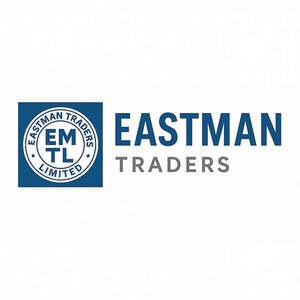

Trade Mark Journal No.2025/046 14 November 2025
UK00004254237 25 August 2025 (9,25)

- Class 9
- Electronic components; Wearable audio equipment; Mobile phones; Mobile phone chargers; Mobile phone speakers; Mobile phone straps; Mobile phone cases; Mobile phone covers; Mobile telephones; Mobile phone battery chargers; Chargers for mobile phones; Devices for hands-free use of mobile phones; Mobile phone screen protectors; Mobile phone ring stands; Mobile phone connectors for vehicles; Keyboards for mobile phones; Straps for mobile phones; Wireless headsets for mobile phones; Mobile phone docking stations; Mobile telecommunications handsets; Downloadable ringtones for mobile phones; Chargers for mobile telephones; Application software for mobile phones; Mobile apps; Battery chargers for mobile phones; Mobile telephone covers; Cases for mobile phones; Computer software for mobile phones; Headsets for mobile telephones; Mobile telephone cases; Downloadable emoticons for mobile phones; Chargers for cell phone; Computer game software for use on mobile and cellular phones; Carriers adapted for mobile phones; Mobile radios; Downloadable ring tones for mobile phones; Straps for mobile telephones; Cellular phones; Computer application software for mobile phones; Wireless headsets for use with mobile telephones; Lanyards for mobile telephones; Downloadable graphics for mobile phones; Cell phones; Auxiliary batteries for mobile phones; Electronic game software for mobile phones; Dashboard mounts for mobile phones; Docking stations for mobile phones.
- Class 25
- Clothing; Knitwear [clothing]; Jackets [clothing]; Ready-to-wear clothing; Woolen clothing; Furs [clothing]; Garments for protecting clothing; Layettes [clothing]; Clothing layettes; Linen clothing; Headbands [clothing]; Headbands for clothing; Gloves [clothing]; Gloves as clothing; Clothes; Aprons [clothing]; Maternity clothing; Kerchiefs [clothing]; Jerseys [clothing]; Denims [clothing]; Shorts [clothing]; Cashmere clothing; Capes (clothing); Gabardines [clothing]; Oilskins [clothing]; Leather clothing; Clothing of leather; Leather (Clothing of -); Collars [clothing]; Silk clothing; Parts of clothing, footwear and headgear; Knitted clothing; Veils [clothing]; Hoods [clothing]; Corsets [clothing, foundation garments]; Windproof clothing; Wristbands [clothing]; Embroidered clothing; Belts [clothing]; Belts for clothing; Bandeaux [clothing]; Waterproof clothing; Rainproof clothing; Casual clothing; Visors [clothing]; Jackets being sports clothing; Stuff jackets [clothing]; Jackets (Stuff -) [clothing]; Clothing for leisure wear; Bottoms [clothing]; Playsuits [clothing]; Ready-made clothing; Latex clothing; Trunks being clothing; Infant clothing; Woven clothing; Drawers [clothing]; Drawers as clothing; Leisure clothing; Athletic clothing; Ties [clothing]; Clothing for sports; Sports clothing; Muffs [clothing]; Bodies [clothing]; Clothing for babies; Tops [clothing]; Clothing for infants; Clothing for cycling; Weatherproof clothing; Pockets for clothing; Water-resistant clothing; Triathlon clothing; Handwarmers [clothing]; Clothing for skiing; Fabric belts [clothing]; Thermal clothing; Beach clothing; Chaps (clothing); Cowls [clothing]; Men's clothing; Dance clothing; Mitts [clothing]; Plush clothing.
EASTMAN TADERS LIMITED